A Macro View on Analog Synthesis
May 14, 2021
Lately, I've been learning about analog synthesis. In this post, I want to document what I've learned so far and how I approached the topic. Disclaimer: I am not an expert.
Analog & Digital Synthesis
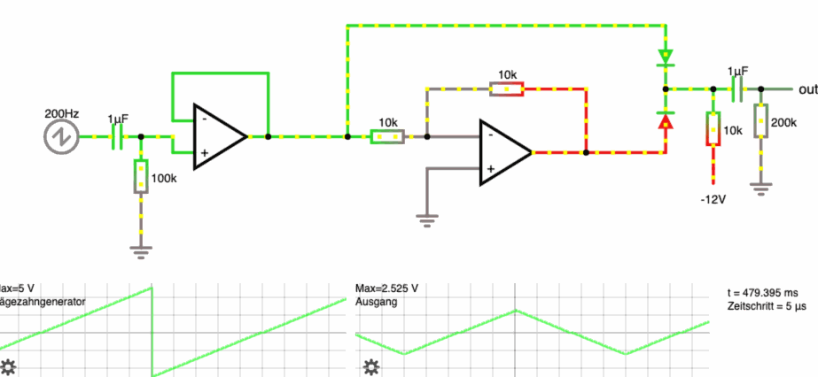
In a nutshell, analog synthesis produces sound by directly manipulating voltages in electrical circuits. In digital synthesis, buffered sound data is calculated from code and then passed to an audio interface that transforms it into voltage.
Generally, analog synthesis is much simpler in its infrastructure. The higher complexity of digital synthesis allows much more fine grained control, whereas analog synthesis can sometimes behave in unexpected ways.
I am not going into the debate of which is "better" here, as both ways have their right to exist.
From Voltage to Sound 🔌 🔊
In both analog and digital synthesis, we have a voltage at the end, which is fed to the sound system (amplifier + speaker).
When the voltage does a sine wave,
the membrane will move like this:
... which will push and pull the air molecules around (now from left to right..):

So, the displacement of the membrane in the speaker is directly affected by that incoming voltage level. When the membrane moves, it pushes the air molecules back and forth, creating a sound wave that the human ear can detect.
If you want to read more on the basics of sound, I recommend this post by waitbutwhy.
Building Blocks of Analog Synthesis
Now that we have the basic theory out of the way, let's look at the most important building blocks of an analog synth.
Micromodules
As this post is a macro view on analog synthesis, I will not talk about how the electric circuits work in detail. To start playing around with analog synthesis, I found the micromodules from Syntaxis (not sponsored 🙂). They provide breadboard friendly components that can be linked together in multiple ways. With them, I could start to explore how analog modules interact without needing to know the details about how to build the circuits.
The Oscillator
As a sound source, we need at least one oscillator. At the heart of an analog oscillator, an electric circuit is creating some kind of periodic voltage wave. Commonly, the frequency of that wave can be controlled with voltage (CV = Control Voltage). An oscillator that can be controlled with voltage is called a VCO (= Voltage Controlled Oscillator).
Let's start with a simple circuit:
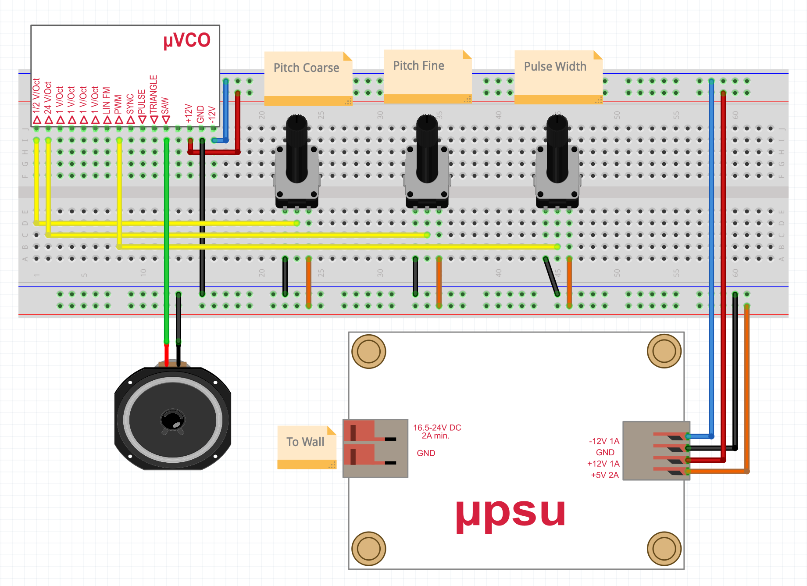
| color | meaning |
|---|---|
| +12V | |
| -12V | |
| Ground (0V) | |
| 5V | |
| Control Voltage (CV) | |
| Analog Audio Voltage |
We will use this color coding throughout the post. This is the (much more messy) circuit in real life:

Parts
- uVCO-3340-A
- uPSU-112-A with laptop charger
- 8ohm speaker
- 3 potentiometers to provide CV
- breadboard + cables
Power Connections
- The PSU (power suplly unit) provides -12V, GND (0V), +12 and 5V.
- The VCO is connected to -12V, GND and 12V
- The potentiometers are connected to GND and 5V, outputting a voltage between 0 and 5V.
Similar power connections will be used throughout the post.
Control Voltage
The output of the pots is used as CV to change certain parameters of the VCO:
- The coarse pot is connected to the 1/2 V/Oct input, which means it can add 5V/0.5V = 10 octaves
- The fine pot is connected to the 24V/Oct input, which means it can add 5V/24V = 0.2 octaves = 2.5 semitones
- Let's ignore the pulse width pot for now
Adding a Keyboard
The circuit above is slightly boring, as controlling pitch with a potentiometer is not very useful when we want to play melodies. To fix that, let's remove all pots and add a keyboard that supports CV, like the Arturia Keystep:
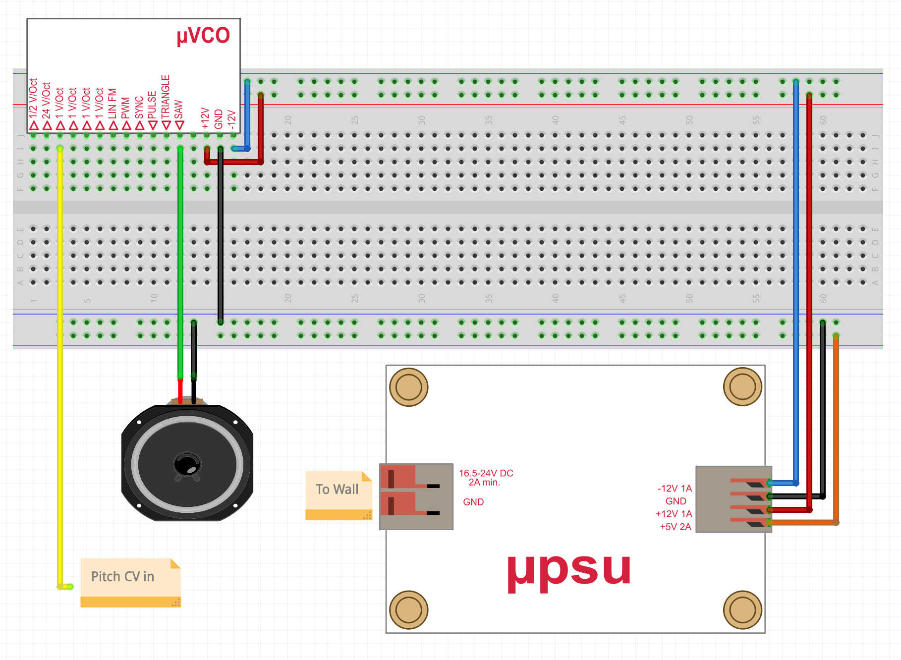
In reality:
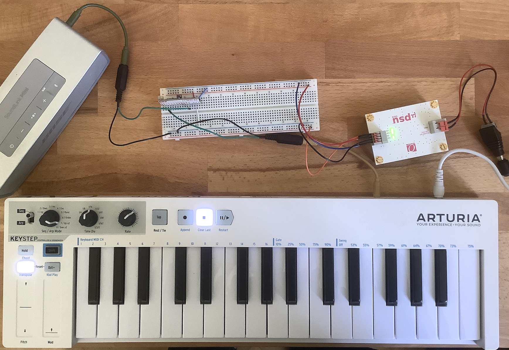
- The keystep has a pitch cv output, that I connected to the 1V/Oct input of the VCO, using a 3,5mm jack (which is also grounded)
- I also replaced the cheap 8ohm speaker with a Bluetooth Speaker that has an AUX input.
Ready to Rave?
Now we are finally ready to rave (loud):
If we look at the waveform, we can see the crisp sawwave:
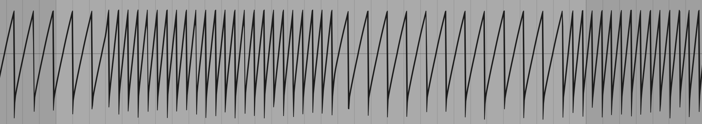
Here, we can clearly see the sawwave changing frequencies. Also, we can make out slight wobbles in the amplitude, which is that dirty analog imperfection we want.
The Filter
If you listen to the sound above, the sawwave is really harsh, which might be tamed with a filter:
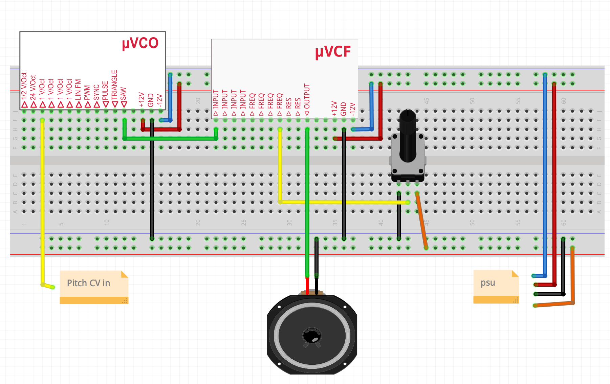
In reality (with slightly exaggerated cutoff pot):
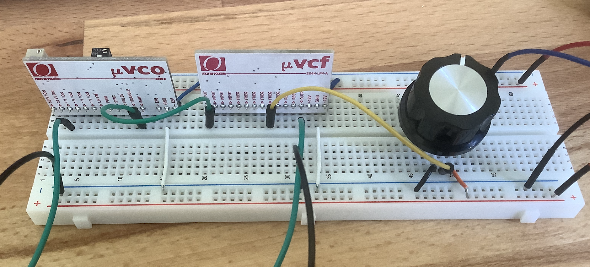
Explanation
- Instead of going from the VCO saw output directly to the speaker, we route it into the filter input
- The filter output is then plugged to the speaker
- The potentiometer controls the cutoff frequency of the filter
- A filter that can be controlled with voltage is called VCF (Voltage Controlled Filter)
Now the rave gets better
In the beginning of the waveform, we can see the sawwave emerging from a more sinelike shape as the filter opens:
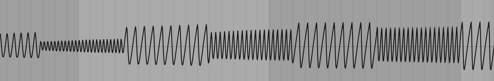
The LFO
So far, I had to use my hand to manually turn the cutoff knob. Using an LFO (= Low Frequency Oscillator), we can automate periodic CV changes:
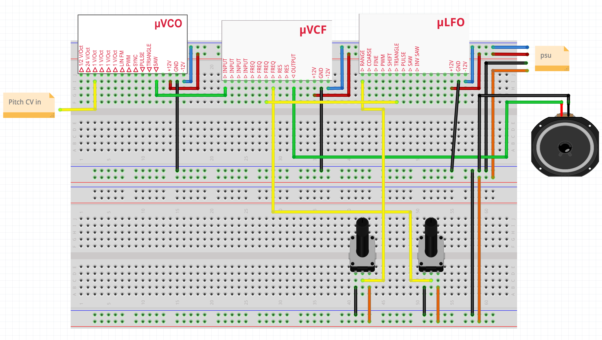
In the messy real life:

Explanation
- The LFOs triangle output is connected with the filter frequency input
- The right pot is connected to another filter frequency input
- Both frequency inputs will be summed by the filter
- A left pot controls the speed of the lfo
Hands free raving
In the waveform, the periodic cutoff changes look like this:
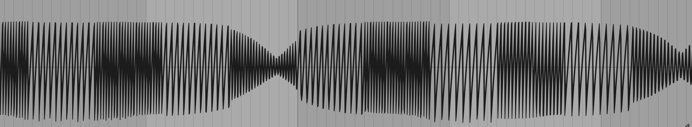
The Attenuator
So far, the LFO has a pretty big impact on our filter. It would be nice if we could somehow control the amount of impact.. This is where the attenuator comes in. Unlike the other modules, an attenuator is just a potentiometer with special wiring:
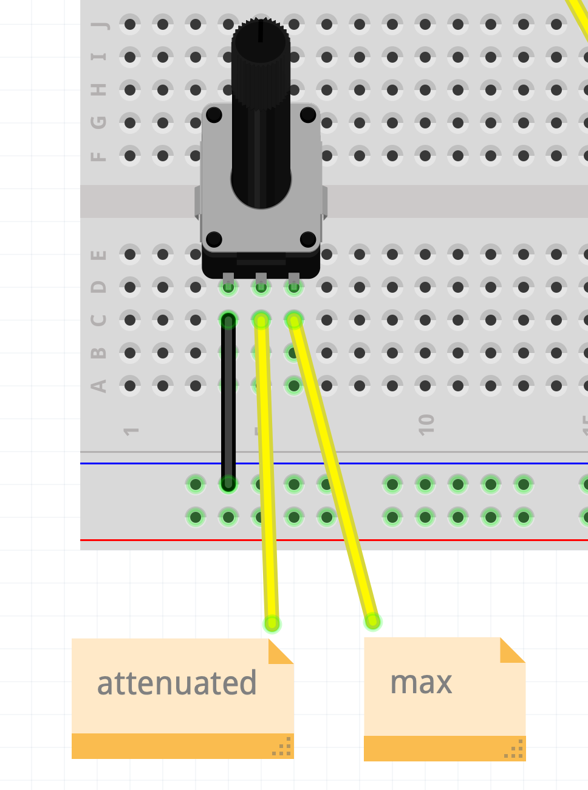
Instead of wiring 5V to the right pin, we use any signal that should be attenuated. In our case, we can use the LFO triangle output. Using the pot, we can then scale it down to minimize its impact:
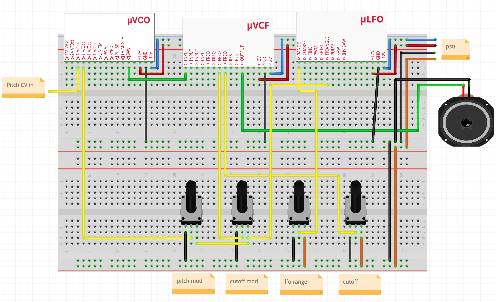
The rats nest in real life:

Note that I also added an attenuator for pitch. You can view the attenuator like a modulation depth control for any parameter.
Let's rave again
In the waveform, we can see the wobbles getting slightly more intense to the right:
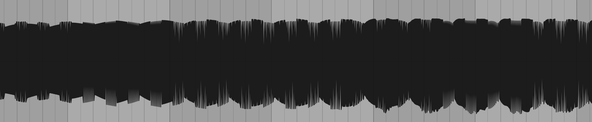
Time for a Melody
Using the pitch modulation attenuator, we can create a spacey melody ontop (layered with a DAW):
(The steady beeping came from my potentiometer bouncing out of the breadboard...)
Gate Signals and the Amplifier
In our little synth, the tone keeps going on and on and on, even if we release the key on the keyboard. This is not really practical to make music with.. To control the volume / amplitude of a signal, we can use a VCA (= Voltage Controlled Amplifier).
When using a keyboard, we want the sound to start when the key is pressed and stop when it is released. Therefore, a keyboard that includes CV will commonly also have a Gate output. By convention, the gate signal will be low (0V) when no key is pressed and high (5V) when a key is pressed.
Back to the circuit: To keep it simple, let's remove the lfo and the attenuators, and add the VCA + Gate:
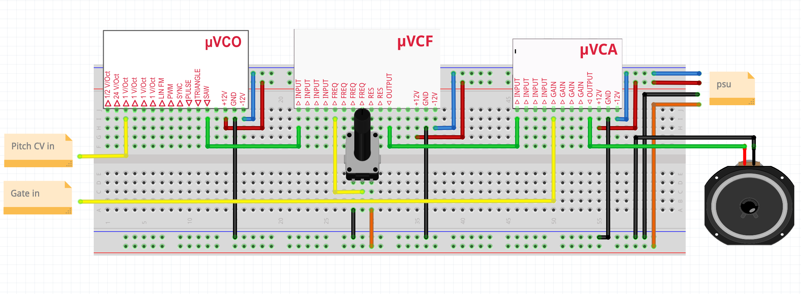
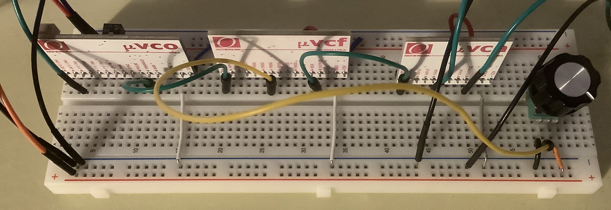
Now we can release the key and the sound will stop.
The ADSR Envelope
Using the gate to control our amplifier sounds really hard and sometimes clicky. For softer sounds, we might want to fade the in when the key is pressed and out when it is released. This is where the ADSR envelope comes in. ADSR stands for:
- Attack: Time till the note reaches the max volume
- Decay: Time till the note reaches the sustain level
- Sustain: Final level for the sustained note
- Release: Time till the note is silent after the key is released

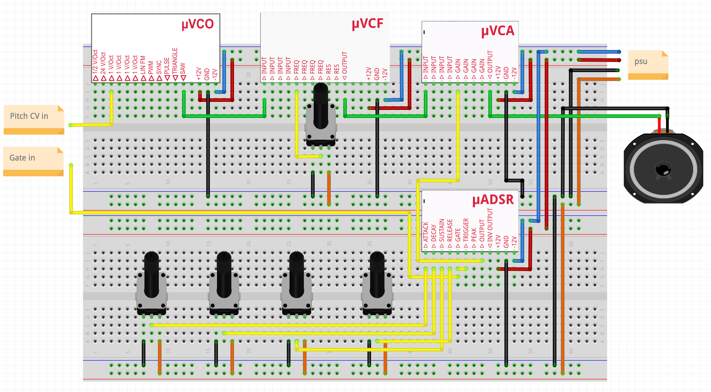

Now we can control the ADSR curve with the 4 pots on the bottom! As we will see soon, we can also use attenuators to modulate parameters with an envelope.
In the waveform, we can see the slow decay:
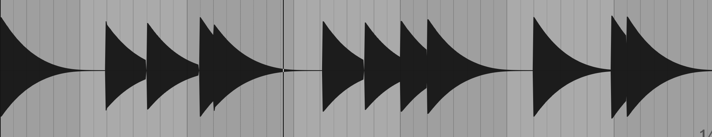
Putting it all together
After we examined the most important building blocks of a classic analog synthesizer, let's combine all of them!
This sketch from the micromodular how to site shows how we can arrange all the parts to a fully functional monosynth:
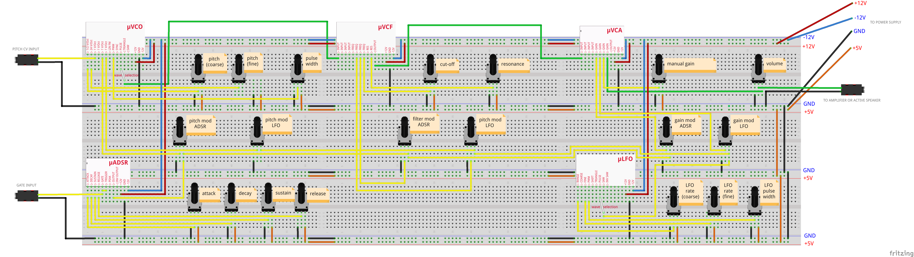
Of course, I also built this thing:

Controls
- VCO
- pitch coarse
- pitch fine
- pulse width (for square wave)
- pitch mod ADSR attenuator
- pitch mod LFO attenuator
- VCF
- cutoff
- resonance
- cutoff mod ADSR attenuator
- res mod LFO attenuator
- VCA
- manual gain
- volume attenuator
- gain mod ADSR attenuator
- gain mod LFO attenuator
- LFO
- rate coarse
- rate fine
- pulse width
Final Thoughts
Those were the most essential building blocks of an analog synthesizer. In a future posts, I might
- combine the synth with my DIY Keyboard Scanner
- use a multi channel DAC to output polyphonic CV
- build modules from scratch